Graphviz DOT Language Guide: Using stzDotCode
Graphviz has been integrated into the Softanza ExerCode framework to provide a powerful, code-driven approach to creating professional diagrams. Rather than building visualizations through UI interactions, Graphviz allows developers to define diagrams as structured text, making them version-controllable, reproducible, and programmatically generated.
par Mansour Ayouni · dans le dépôt depuis le 2025-10-16 · tutoriel · domaine Diagrammes et graphes
Cet article est écrit en anglais, comme la bibliothèque.
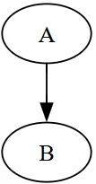
Introduction: Why Graphviz in Softanza?
Basic Usage Pattern
Dot = new stzDotCode()
Dot.SetCode('digraph MyGraph { A -> B; }')
Dot.ExecuteAndView()illustration
Core Concepts
Graph Types
DOT supports two fundamental structures:
Directed Graphs - For workflows, hierarchies, and dependencies:
Dot = new stzDotCode()
Dot.SetCode('
digraph MyWorkflow {
Start -> Process -> End
}
')
Dot.RunAndView()illustration
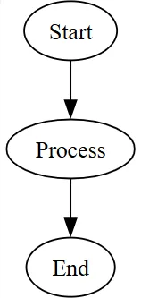
Undirected Graphs - For networks, relationships, and physical connections:
Dot = new stzDotCode()
Dot.SetCode('
graph MyNetwork {
ServerA -- ServerB
ServerB -- ServerC
}
')
Dot.Run()
Dot.View()illustration
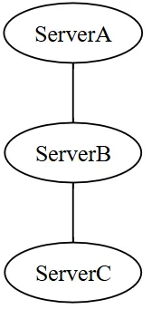
The Three Levels of Attributes
Graphviz styling works hierarchically:
Dot = new stzDotCode()
Dot.SetCode('
digraph G {
# Graph-level: affects entire diagram
graph [rankdir=LR, bgcolor=white]
# Node-level: affects all nodes
node [shape=box, style=filled, fillcolor=lightblue]
# Edge-level: affects all edges
edge [color=gray, penwidth=2]
# Individual node: overrides defaults
Important [fillcolor=orange]
# Individual edge: overrides defaults
Important -> Critical [color=darkred, penwidth=4]
}
')
Dot.ExecuteXT()illustration
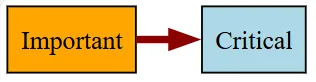
The more specific level always wins. An individual node'sfillcolor overrides the default node attribute.
Node Shapes: Building Your Visual Language
Nodes are the "nouns" of your diagram. Shape choice communicates meaning.
Common Shapes and Their Purposes
| Shape | Haro Code | Best For |
|---|---|---|
| Box | shape=box |
Processes, tasks, events |
| Circle | shape=circle |
States, simple items |
| Ellipse | shape=ellipse |
Start/end points, default |
| Diamond | shape=diamond |
Decisions, conditions |
| Record | shape=record |
Data structures, tables |
| Cylinder | shape=cylinder |
Databases, storage |
| Component | shape=component |
Hardware, modules |
| Trapezium | shape=trapezium |
Input/output |
| Parallelogram | shape=parallelogram |
Data input |
Shape Example
Dot = new stzDotCode()
Dot.SetCode('
digraph Shapes {
graph [rankdir=LR]
node [style=filled, fontname="Arial"]
box_node [shape=box, fillcolor=lightblue, label="Process"]
circle_node [shape=circle, fillcolor=lightgreen, label="State"]
decision [shape=diamond, fillcolor=yellow, label="Decision?"]
box_node -> circle_node -> decision
}
')
Dot.SetOutputFile("shapes.svg")
Dot.ExecuteAndView()illustration
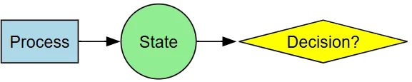
A horizontal diagram showing three different node shapes connected by arrows.Edges: Connecting Your Ideas
Edges represent relationships. Their styling communicates the nature of that relationship.
Edge Styling Options
Dot = new stzDotCode()
Dot.SetCode('
digraph EdgeStyles {
graph [rankdir=TB, nodesep=0.8]
node [shape=box, style="rounded,filled", fillcolor=lightblue]
A [label="Node A"]
B [label="Node B"]
C [label="Node C"]
D [label="Node D"]
# Normal solid edge
A -> B [label="Normal"]
# Dashed: optional or weak connection
A -> C [label="Optional", style=dashed]
# Bold: strong or primary path
A -> D [label="Primary", style=bold, penwidth=3]
}
')
Dot.RunAndView()illustration
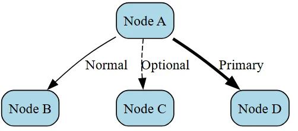
Arrow Types
haro
Dot = new stzDotcode()
Dot.SetCode('
digraph ArrowTypes {
graph [rankdir=LR, nodesep=0.8]
node [shape=box, style="rounded,filled", fillcolor=lightblue]
edge [fontname="Arial", fontsize=10]
A [label="Node A"]
B [label="Normal"]
C [label="Dot"]
D [label="Diamond"]
E [label="Both"]
F [label="Back"]
G [label="None"]
A -> B [arrowhead=normal, label="normal"]
A -> C [arrowhead=dot, label="dot"]
A -> D [arrowhead=diamond, label="diamond"]
A -> E [dir=both, label="both"]
A -> F [dir=back, label="back"]
A -> G [dir=none, label="none"]
}
')
Dot.SetOutputFile("arrow_types.svg")
Dot.ExecuteAndView()illustration
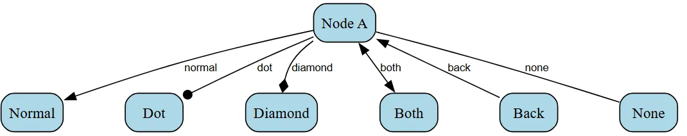
Seven edges from Node A to different target nodes, each demonstrating a different arrow style.Layout Control: Directing Flow
The layout determines how your diagram reads.
Rank Direction (rankdir)
haro
graph [rankdir=TB] # Top to Bottom (default) - natural reading graph [rankdir=LR] # Left to Right - timelines, processes graph [rankdir=BT] # Bottom to Top - dependencies building upward graph [rankdir=RL] # Right to Left - uncommon, reverse flow
illustration
Choosing rankdir:
- TB: Hierarchies, org charts, processes (most intuitive)
- LR: Timelines, sequences, system architectures (left-to-right reading)
- BT: Dependency trees (showing what feeds into what)
- RL: Alternative direction (rarely used)
Alignment: Same Rank
Force nodes onto the same horizontal or vertical level:
haro
dot = new stzDotCode()
Dot.SetCode('
digraph Timeline {
graph [rankdir=LR]
node [shape=box]
# Time markers on same rank
{rank=same; t1, t2, t3, t4}
t1 [label="Week 1"]
t2 [label="Week 2"]
t3 [label="Week 3"]
t4 [label="Week 4"]
# Tasks aligned with times
{rank=same; t1, task1}
task1 [label="Planning"]
{rank=same; t2, task2}
task2 [label="Development"]
t1 -> t2 -> t3 -> t4
task1 -> task2
}
')
Dot.RunAndView()illustration
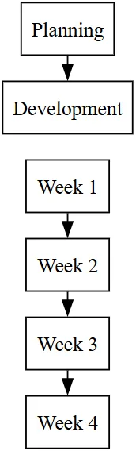
Clusters: Grouping Related Nodes
Clusters create visual groupings with boundaries. They're essential for showing organizational structure, system layers, or process phases.
Creating Clusters
haro
Dot.SetCode('
digraph Architecture {
graph [rankdir=TB, compound=true]
node [shape=box, style="rounded,filled"]
# Frontend cluster
subgraph cluster_frontend {
label="Frontend Layer"
style=filled
fillcolor=lightblue
color=blue
ui [label="User Interface", fillcolor=skyblue]
controller [label="Controller", fillcolor=skyblue]
ui -> controller
}
# Backend cluster
subgraph cluster_backend {
label="Backend Layer"
style=filled
fillcolor=lightgreen
color=green
api [label="REST API", fillcolor=palegreen]
logic [label="Business Logic", fillcolor=palegreen]
api -> logic
}
# Cross-cluster connections
controller -> api [lhead=cluster_backend, label="HTTP"]
}
')illustration
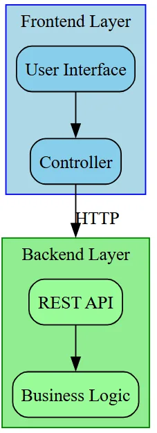
Key points:- Cluster names must start with
cluster_to get a visual box - Use
lheadandltailfor clean cross-cluster connections - Set
compound=trueat graph level to enable these features
Color and Style: Visual Communication
Color choices convey meaning and hierarchy.
Built-in Color Schemes
Rather than random colors, use schemes for consistency:
haro
node [colorscheme=blues9] A [fillcolor=1] # Lightest blue B [fillcolor=5] # Medium blue C [fillcolor=9] # Darkest blue, fontcolor=white for readability
illustration
Popular schemes:
blues9, reds9, greens9- Monochromatic, 9 shadespaired12- Complementary pairsset19- Distinct colors for categories
Style Combinations
haro
node [style="filled"] # Just fill color node [style="rounded,filled"] # Rounded corners + fill node [style="dashed"] # Dashed outline node [style="bold,filled"] # Thicker outline + fill
illustration
Color Psychology
Use colors consistently:
- Green - Success, approval, "go"
- Red - Error, stop, critical
- Yellow/Orange - Warning, caution
- Blue - Information, process, neutral
- Gray - Inactive, optional, deprecated
Advanced: Record Shapes
Record shapes create multi-part nodes useful for data structures, class diagrams, or complex information.
haro
Dot.SetCode('
digraph Records {
graph [rankdir=LR]
node [fontname="Courier"]
# Simple record with vertical sections
simple [shape=record, label="Header|Body|Footer"]
# Record with named ports
struct [shape=record,
label="<name>User|<email>john@example.com|<id>EMP-123"]
# Complex record
class [shape=record, style=filled, fillcolor=lightblue,
label="{<title>MyClass|<attrs>- id: int\l- name: string\l|<methods>+ getData()\l+ setData()\l}"]
}
')illustration
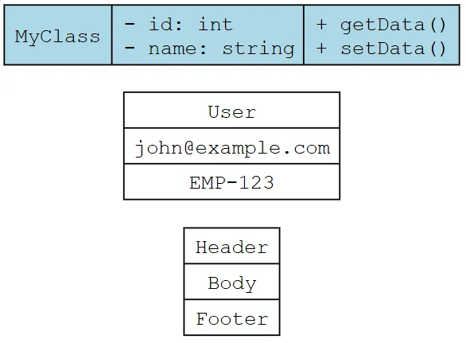
Port notation:|separates vertical sections<name>creates a named connection point{}subdivides sections horizontally
Practical Patterns
Organization Chart
haro
Do = new stzDotCode()
Dot.SetCode('
digraph Hierarchy {
graph [rankdir=TB, splines=ortho, nodesep=0.6, ranksep=0.8]
node [shape=box, style="rounded,filled", fontname="Arial"]
edge [color=gray40, arrowsize=0.8]
# Force same rank for specific nodes
{rank=same; CEO}
{rank=same; VP_Sales, VP_Eng, VP_Ops}
{rank=same; Sales_A, Sales_B, Dev_A, Dev_B, Ops_A, Ops_B}
CEO [fillcolor=gold, fontcolor=black, label="CEO"]
VP_Sales [fillcolor=lightcoral, label="VP Sales"]
VP_Eng [fillcolor=lightblue, label="VP Engineering"]
VP_Ops [fillcolor=lightgreen, label="VP Operations"]
Sales_A [fillcolor=mistyrose, label="Sales Rep A"]
Sales_B [fillcolor=mistyrose, label="Sales Rep B"]
Dev_A [fillcolor=lightcyan, label="Developer A"]
Dev_B [fillcolor=lightcyan, label="Developer B"]
Ops_A [fillcolor=honeydew, label="Ops Staff A"]
Ops_B [fillcolor=honeydew, label="Ops Staff B"]
CEO -> {VP_Sales, VP_Eng, VP_Ops} [penwidth=2]
VP_Sales -> {Sales_A, Sales_B}
VP_Eng -> {Dev_A, Dev_B}
VP_Ops -> {Ops_A, Ops_B}
}
Dot.RunAndView()illustration
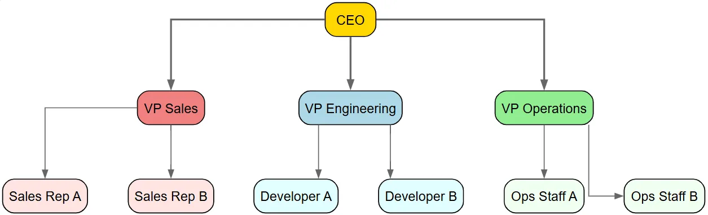
State Machine
haro
Do = new stzDotCode()
Dot.SetCode('
digraph StateMachine {
graph [rankdir=LR, bgcolor=white, fontname="Arial"]
node [fontname="Arial", style=filled]
edge [fontname="Arial", fontsize=10]
# Special states
start [shape=circle, fillcolor=black, width=0.3, label=""]
end [shape=doublecircle, fillcolor=black, width=0.3, label=""]
# Regular states
idle [shape=circle, fillcolor=lightblue, label="Idle"]
processing [shape=circle, fillcolor=yellow, label="Processing"]
waiting [shape=circle, fillcolor=orange, label="Waiting"]
complete [shape=circle, fillcolor=lightgreen, label="Complete"]
error [shape=circle, fillcolor=red, fontcolor=white, label="Error"]
# Transitions
start -> idle [label="init"]
idle -> processing [label="start()"]
processing -> waiting [label="wait_for_input()"]
processing -> complete [label="success"]
processing -> error [label="exception"]
waiting -> processing [label="input_received()"]
waiting -> error [label="timeout"]
error -> idle [label="retry()", style=dashed]
complete -> end [label="finalize"]
# Self-loop
idle -> idle [label="ping()", style=dotted]
}
')
Dot.SetOutputFile("state_machine.svg")
Dot.ExecuteAndView()illustration
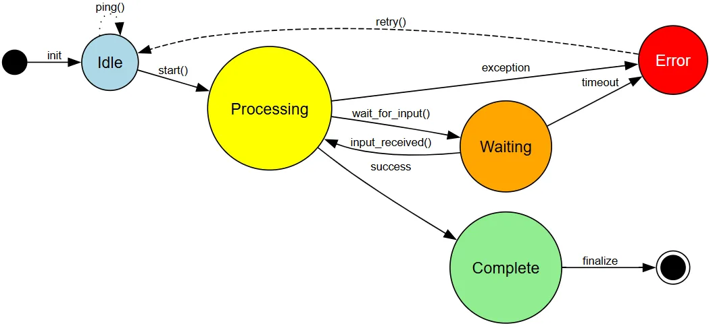
Process Workflow
haro
Dot.SetCode('
digraph Workflow {
graph [rankdir=LR, splines=ortho]
node [shape=box, style="rounded,filled"]
start [shape=circle, fillcolor=green, label="Start"]
input [fillcolor=lightblue, label="Input Data"]
process [fillcolor=lightyellow, label="Process"]
decision [shape=diamond, fillcolor=gold, label="Valid?"]
output [fillcolor=lightgreen, label="Output"]
error [fillcolor=lightcoral, label="Error"]
end [shape=circle, fillcolor=red, label="End"]
start -> input -> process -> decision
decision -> output [label="Yes"]
decision -> error [label="No"]
output -> end
error -> end
}
')
Dot.SetOutputFile("workflow.svg")
Dot.ExecuteAndView()illustration
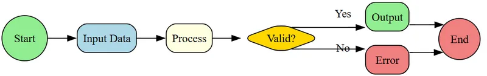
Best Practices
1. Start Simple, Build Complexity
Begin with basic nodes and edges, then add styling and structure.
haro
# Version 1: Structure
Dot.SetCode('
digraph G {
A -> B -> C
}
')
# Version 2: Styling
Dot.SetCode('
digraph G {
node [shape=box, style=filled]
A [fillcolor=lightblue]
B [fillcolor=lightgreen]
C [fillcolor=lightyellow]
A -> B -> C
}
')illustration
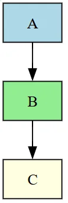
2. Use Consistent Styling
Group similar elements with the same appearance:
haro
Dot.SetCode('
digraph G {
# All processes: blue boxes
node [shape=box, fillcolor=lightblue]
process1; process2; process3
# All decisions: gold diamonds
node [shape=diamond, fillcolor=gold]
decision1; decision2
# All endpoints: circles
node [shape=circle, fillcolor=green]
start; end
}
')illustration
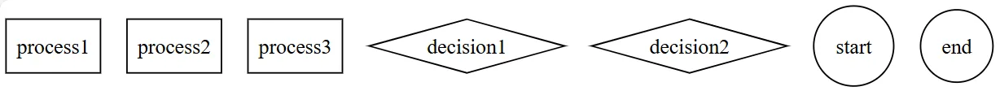
3. Label Everything
Clear labels are essential for understanding:
haro
# Bad: unclear A [label="X"] # Good: descriptive user_input [label="User\nEnters Data"]
illustration
4. Use rankdir Intentionally
Match the reading direction to your audience's expectations:
haro
# Org chart: top-down graph [rankdir=TB] # Timeline: left-to-right graph [rankdir=LR] # Build process: bottom-up graph [rankdir=BT]
illustration
5. Limit Density
Too many connections or nodes creates visual chaos:
- Use clusters to group related items
- Use separate diagrams for different aspects
- Consider breaking complex flows into stages
Troubleshooting
Diagram Not Rendering
Issue: stzDotCode throws an error or file isn't created.
Check:
- Graphviz is installed (
dot.exeexists at specified path) - DOT code has matching braces
{ } - No syntax errors (semicolons at line ends)
- Output directory exists and is writable
Nodes Overlapping
Issue: Nodes are cramped together.
Solutions:
haro
graph [rankdir=TB, nodesep=0.8, ranksep=1.0] # More spacing graph [splines=ortho] # Right-angle edges, less overlap graph [overlap=false] # Force layout algorithm to avoid overlaps
illustration
Edges Too Complicated
Issue: Lines cross and tangle.
Solutions:
- Use
splines=orthofor clean right-angle lines - Use
rankdir=LRinstead of TB for certain hierarchies - Break into multiple clusters
- Consider separate diagrams for different aspects
Output File Not Where Expected
Remember the directory structure:
haro
Dot.SetOutputDir("output") # Sets base directory
Dot.SetOutputFile("diagram.svg") # Creates output/diagram.svg
Dot.SetOutputFile("subdir/diagram.svg") # Creates output/subdir/diagram.svgillustration
Summary
Graphviz's text-based approach to diagram creation enables:
✓ Version Control - Diagrams in Git alongside code ✓ Automation - Generate diagrams from data programmatically ✓ Reproducibility - Same input always produces same output ✓ Scale - Create hundreds of diagrams without UI interaction ✓ Integration - Embed diagram generation into applications
stzDotCode is your programmatic bridge to this power. Master the DOT language fundamentals, and you unlock the ability to create professional, maintainable diagram infrastructure within SoftAnza.
Citer
Mansour Ayouni. « Graphviz DOT Language Guide: Using stzDotCode ». Softanza narrations, 2025. https://mayouni.github.io/stzsite/fr/narrations/stzdotcode-graphiz-dot-language-guide.html
Non exécuté : son code touche aux fichiers, au réseau, à l'horloge ou au hasard. L'article est publié tel qu'il est écrit ; ses blocs sont des illustrations. Le code des articles est du code Haro. Là où un article a été écrit avant que la langue prenne son nom actuel, le nom a été changé et rien d'autre. Genre, domaine et série lus dans le nom du fichier, année tirée du premier commit : dérivés, jusqu'à ce que l'article porte son propre en-tête. Le fichier sur GitHub(s'ouvre dans un nouvel onglet)